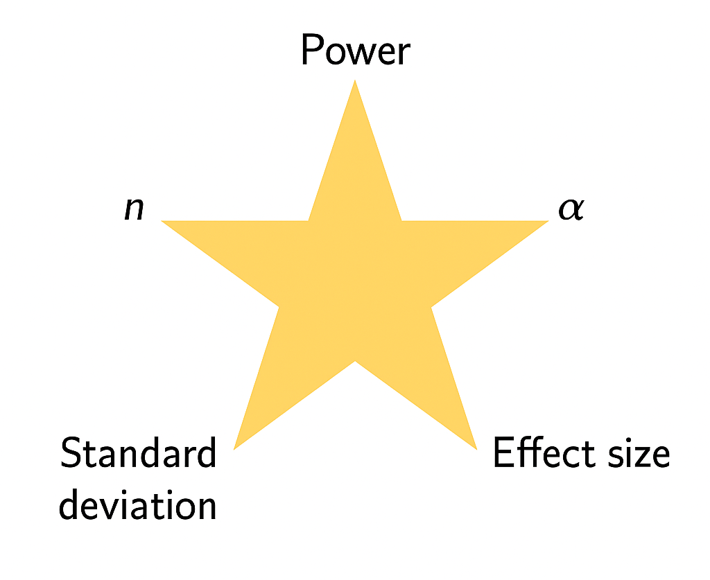
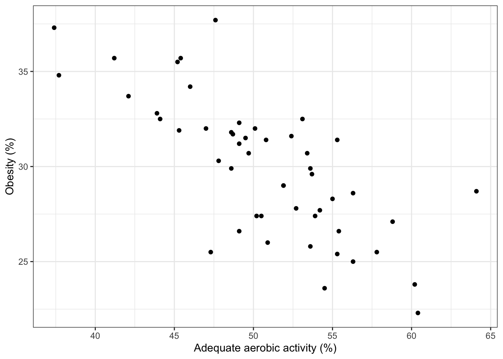
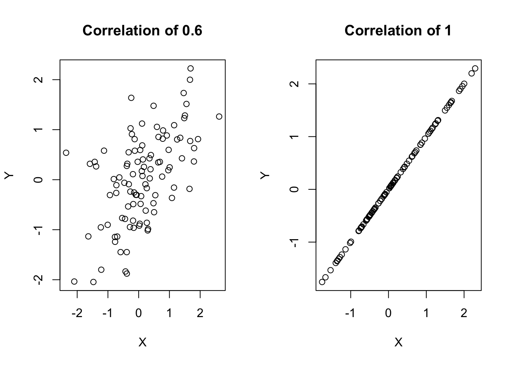
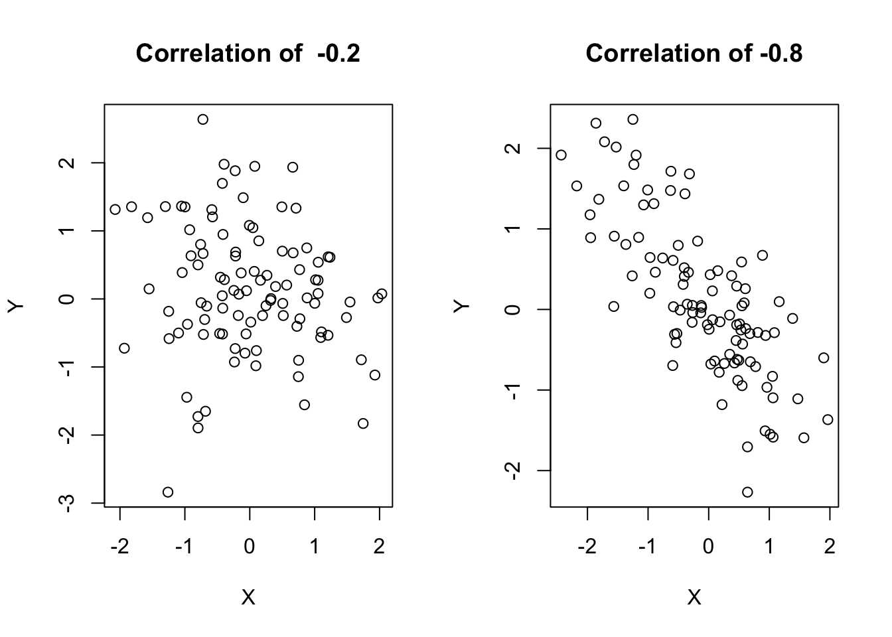
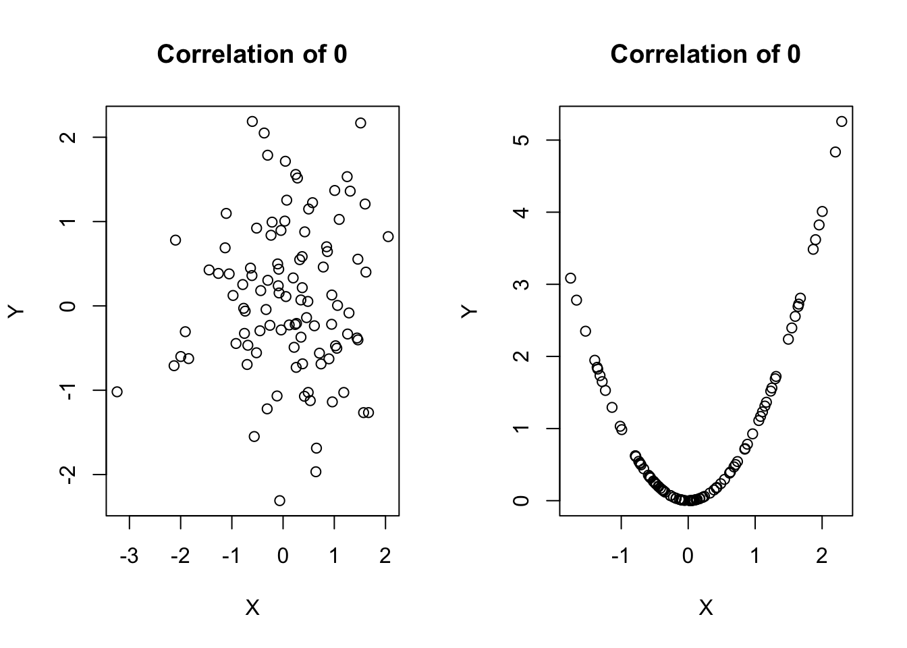
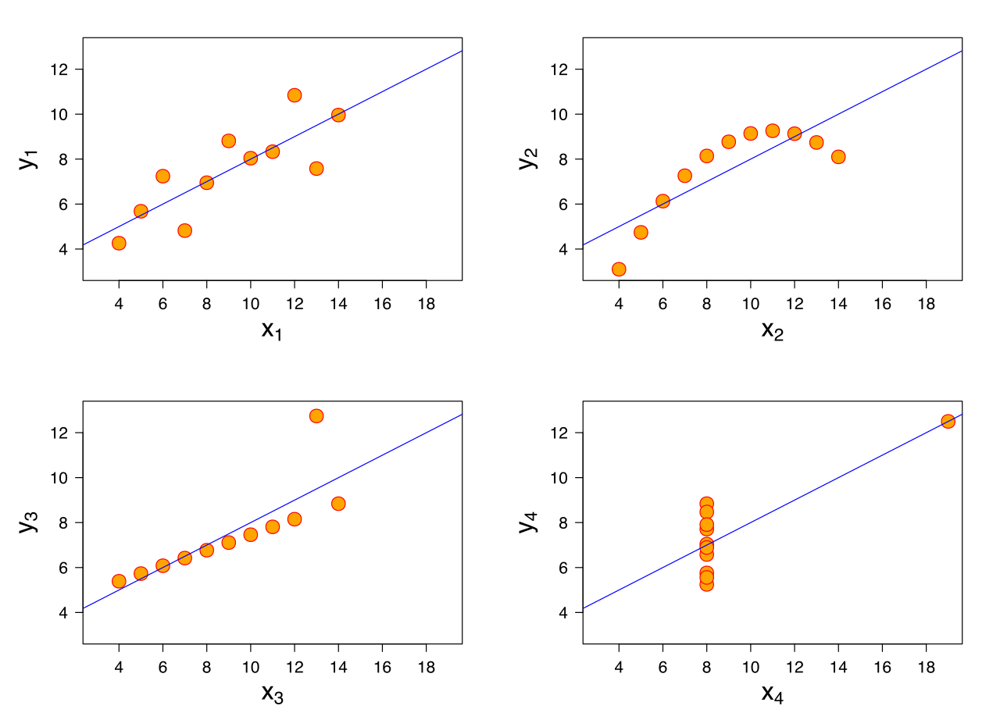
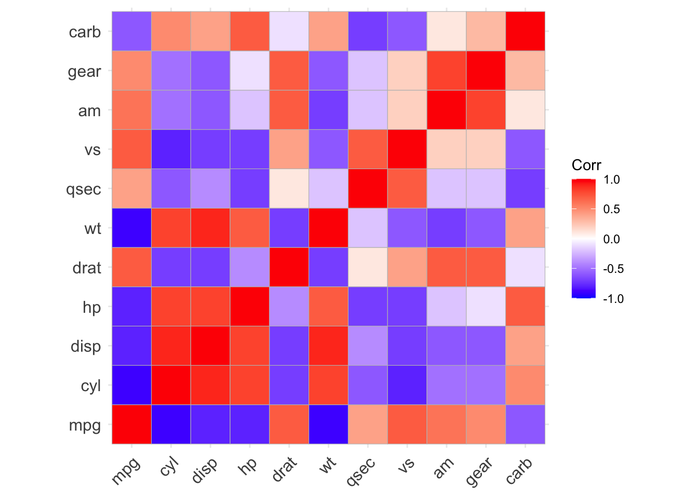
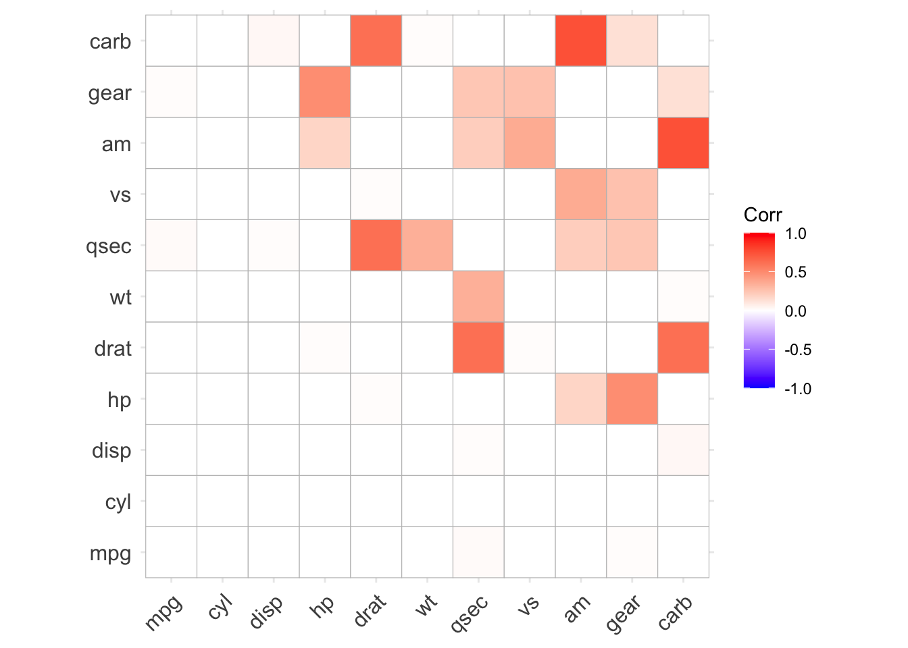

alpha <- 0.05 # type 1 error rate
beta <- .20 # type 2 error rate
qnorm(1-alpha/2); qnorm(1-beta)[1] 1.959964[1] 0.8416212BIOS 600 - Summer Session II 2026
HW11 due tonight by 11:59 PM
HW12 due tomorrow by 11:59 PM
Exam 2 on Thursday! Tomorrow’s class will be for review
Why calculate sample size and power?
How to calculate sample size and power in R
Comparing two continuous variables
P&G Sections 10.4 and 10.6, 17
OI: Section 8.1
| Non‑Parametric Test | Parametric Test | Key Features |
|---|---|---|
| Sign test | Paired t‑test | Uses only direction (+/–) of paired differences; ignores magnitude; requires only independence |
| Wilcoxon signed‑rank | Paired t‑test | Uses magnitude + direction of paired differences; requires symmetric distribution of differences |
| Non‑Parametric | Parametric Test | Key Features |
|---|---|---|
| Mann–Whitney U/ Wilcoxon rank‑sum |
Two‑sample t‑test | Rank‑based comparison of two independent groups |
| Kruskal–Wallis | One‑way ANOVA | Rank‑based comparison of 3+ independent groups |
To show that under certain required conditions, a hypothesis test has a good chance of showing the anticipated difference, if it really exists
To be more confident that a null result is not simply a sample of excessive variability
To show a funding agency that the study has a reasonable chance of reaching a useful result (leading them to fund your grant!)
To show that necessary resources (human, animal, financial, time, etc.) will be minimized
Showing adequate statistical power is usually necessary in order to get funding for research!
Power is the probability of rejecting the null hypothesis when it is false (i.e., of avoiding a Type II error)
\[\text{Power} = P(\text{reject } H_0 | H_0 \text{ is false})\]
and can be also thought of as the likelihood a planned study will detect a deviation from the null hypothesis if one really exists. Power is a function of:
Sample size \(n\)
Deviation from the null one hopes to detect
Standard deviation \(σ\)
\(\alpha\), the Type I error rate
| Decision | Truth: (\(H_0\)) True | Truth: (\(H_0\)) False |
|---|---|---|
| Reject (\(H_0\)) | Type I Error (\(\alpha\)) | Correct Decision → Power (\(1−\beta\)) |
| Fail to Reject (\(H_0\)) | Correct Decision | Type II Error (\(\beta\)) |
How do these four considerations affect power?
When we design a study, it is not enough to know we have a small probability of rejecting \(H_0\) when it is in fact true (i.e. setting \(\alpha = 0.05\)).
We want to know we have a large probability of rejecting the null when it is false. Practically speaking, power less than 80% is typically considered insufficient to warrant a study.
Recall: In our medical diagnostics lecture, we saw that there is a tradeoff between Type 1 and Type 2 error. Lowering \(\alpha\) makes it harder to reject the null hypothesis, which usually reduces power—we’re less likely to catch real effects (true positives).
Increasing power by tolerating more Type I errors is not acceptable. Therefore, we can increase power by
Considering larger deviations from the null (need to think about clinical/practical importance)
Increasing \(n\) (good, though not always affordable)
http://rpsychologist.com/d3/NHST/
Let’s check out this interactive visualization to see how this all works for a one-sample z-test.
| Factor | Change | Effect on Power | Intuition |
|---|---|---|---|
| Sample size (\(n\)) | \(\uparrow\) | \(\uparrow\) Increases | More data → smaller SE → easier to detect true effects |
| Variability (\(\sigma^2\)) | \(\uparrow\) | \(\downarrow\) Decreases | More noise → harder to detect signal |
| Effect size (\(\delta\)) | \(\uparrow\) | \(\uparrow\) Increases | Larger true difference → easier to detect |
| Significance level (\(\alpha\)) | \(\uparrow\) | \(\uparrow\) Increases | More lenient threshold → higher chance to reject \(H_0\) |
Holding \(n\), variance, and \(\alpha\) constant, we have more power to detect a larger difference compared to a smaller one.
Holding variance, effect size, and \(\alpha\) constant, increasing sample size (\(n\)) increases power — with more data, we’re more likely to detect true effects.
Holding \(n\), effect size, and \(\alpha\) constant, (higher/lower) variance decreases power because the signal is harder to detect within the noise.
Holding \(n\), variance, and effect size constant, (increasing/decreasing) \(\alpha\) increases power — we’re more willing to reject the null, so true effects are easier to detect.
When we calculate power, we need to know the minimum difference from the null mean \(\mu_0\) that we wish to detect. We may set up our hypotheses as
\[H_0: \mu = \mu_0\]
\[H_1: \mu \neq \mu_0\]
but need to specify a minimum detectable difference, often called \(\delta=μ_1−μ_0\) such that we reject \(H_0\) with a certain power (usually 80% or 90%) when in fact \(μ=μ_1\). We will need a bigger sample size when \(\delta\) is small, and fewer subjects when \(\delta\) is larger.
Power and sample size are interrelated.
Ideally, when we plan a study, we have a prespecified idea of the minimum difference we want to detect, \(δ=μ_1−μ_0\), the standard deviation, \(\sigma\), and the power, \(1-\beta\), we’d like to have to detect it. In that case, it is straightforward to calculate the required sample size (here given for a one-sample test):
\[n = \left[ \frac{\sigma (z^*_{1-\alpha/2} + z^*_{1-\beta})}{\mu_1-\mu_0}\right]^2\]
Suppose you want to ensure a new manufacturer of birth control pills provides the correct dosage of 0.02 \(\mu\)g estrogen.
How many pills do you need to sample in a shipment in order to ensure 80% power to detect a difference of 10% at \(\alpha\)=0.05, assuming \(\sigma\)=0.008? (10% of 0.02 is 0.002)
\[n = \left[\frac{\sigma(z^*_{1-\alpha/2} + z^*_{1-\beta})}{\mu_1-\mu_0}\right]^2\]
What are \(z^*_{1-\alpha/2}\) and \(z^*_{1-\beta}\)? These are the \(1-\alpha\) and \(1-\beta\) quantile cutoffs of a Z-distribution.
\(\alpha = 0.05\)
Power = 80%, so Type 2 error rate is 1-.80 = .20 = \(\beta\).
alpha <- 0.05 # type 1 error rate
beta <- .20 # type 2 error rate
qnorm(1-alpha/2); qnorm(1-beta)[1] 1.959964[1] 0.8416212\(= \left[\frac{.008(1.96 + 0.84)}{0.002}\right]^2\)
\(= 125.44\)
Using a normal approximation, we would need 126 pills sampled to detect the desired difference of 10%, given \(\sigma = 0.008\), at 80% power.
In the example above, we used the z-distribution. However, we use the \(t\) distribution in practice instead of the \(z\).
This is because the population standard deviation (\(\sigma\)) is rarely known, so we estimate it from the sample.
The t-distribution accounts for this extra uncertainty.
When sample sizes are small or moderate, using the t-distribution provides more accurate power estimates, since it better reflects the variability from estimating \(\sigma\).
power.t.test(delta = 0.002,
sd = 0.008,
sig.level = 0.05,
power = 0.8,
type = "one.sample")
One-sample t test power calculation
n = 127.5161
delta = 0.002
sd = 0.008
sig.level = 0.05
power = 0.8
alternative = two.sidedUsing the t-distribution, we need 128 pills sampled to detect the desired difference.
Researchers are testing whether a new low-sodium diet reduces systolic blood pressure (SBP) compared to a control diet.
Previous studies suggest an average reduction of 8 mmHg with a standard deviation of 10 mmHg.
They plan to recruit 20 participants per group and use a two-sided t-test at the 0.05 level.
Question: What statistical power will they have to detect this difference?
# Power calculation for two-sample t-test
power.t.test(n = 20,
delta = 8,
sd = 10,
sig.level = 0.05,
type = "two.sample",
alternative = "two.sided")
Two-sample t test power calculation
n = 20
delta = 8
sd = 10
sig.level = 0.05
power = 0.6933994
alternative = two.sided
NOTE: n is number in *each* groupInterpretation: With 20 participants per group, the study has about 69% power to detect an 8 mmHg difference.
Suppose we want to test whether a new medication lowers LDL cholesterol compared to a placebo.
From pilot data, we expect a difference of 15 mg/dL with a standard deviation of 20 mg/dL.
We want 90% power at a 0.05 significance level for a two-sided test.
Question: How many participants per group are needed?
power.t.test(power = 0.90,
delta = 15,
sd = 20,
sig.level = 0.05,
type = "two.sample",
alternative = "two.sided")
Two-sample t test power calculation
n = 38.34601
delta = 15
sd = 20
sig.level = 0.05
power = 0.9
alternative = two.sided
NOTE: n is number in *each* group39 individuals per group are needed (rounding up) to achieve 90% power to detect a 15 mg/dL difference in LDL cholesterol between treatments.

| Predictor Type | Outcome Type | Common Tests / Topics |
|---|---|---|
| Categorical | Categorical | Fisher’s exact test, \(\chi^2\) test |
| Categorical | Continuous | t-tests, ANOVA, nonparametric alternatives |
| Continuous | Continuous | Correlation*, regression ** |
| Continuous | Categorical | Logistic regression, classification ** |
| Other / Complex | Various (e.g. survival, counts) | Advanced or “exotic” methods ** |
* = covering today
** = covering in upcoming lectures
── Attaching core tidyverse packages ──────────────────────── tidyverse 2.0.0 ──
✔ dplyr 1.2.1 ✔ readr 2.2.0
✔ forcats 1.0.1 ✔ stringr 1.6.0
✔ ggplot2 4.0.3 ✔ tibble 3.3.1
✔ lubridate 1.9.5 ✔ tidyr 1.3.2
✔ purrr 1.2.2
── Conflicts ────────────────────────────────────────── tidyverse_conflicts() ──
✖ dplyr::filter() masks stats::filter()
✖ dplyr::lag() masks stats::lag()
ℹ Use the conflicted package (<http://conflicted.r-lib.org/>) to force all conflicts to become errors
Direction of relationship: are variables positively or negatively related?
Form: is any relationship linear or more complex?
Strength of relationship: how accurately can one variable predict the other?
Influential points: are one or a few points driving the relationship we see?
The correlation coefficient \(\rho\) quantifies the linear relationship between two random variables.
In statistics, a correlation coefficient implies a very specific type of association.
A correlation coefficient of zero does NOT imply no relationship between two variables, as we shall see in some further examples.
\(\rho\) ranges from -1 to 1
\(\rho>0\) implies positive correlation
\(\rho < 0\) implies negative correlation
\(\rho = 0\) is consistent with no linear relationship between variables (again, this does not imply that no relationship exists!)
What does it mean to have a correlation of -1 or 1?
Attaching package: 'MASS'The following object is masked from 'package:dplyr':
select


Pearson’s correlation \(r\) gives and estimate of \(\rho\) as follows. Assuming our observed data are the pairs \((x_1, y_1), (x_2, y_2), \ldots, (x_n, y_n)\), we can calculate \(r\) as
\[r = \frac{1}{n} \sum_{i=1}^n \left(\frac{x_i - \bar{X}}{S_x}\right)\left(\frac{y_i - \bar{Y}}{S_y}\right)\]
\[= \frac{\sum_{i=1}^n (x_i - \bar{X})(y_i - \bar{Y})}{\sqrt{\sum_{i=1}^n (x_i - \bar{X})^2\sum_{i=1}^n(y_i - \bar{Y})^2}}\]
No need to memorize this!…we’ll just use the cor() function to calculate it in R.

In each of the datasets the following statistical summaries hold:
mean of x: 9
variance of x: 11
mean of y: 7.5
variance of y: 4.125
correlation between x and y: 0.816
Takeaway: Visualizing your data is important! Summary statistics alone cannot capture the full relationship between x and y.
Also, Datasaurus Dozen!
![A graph with the title Solar power generated in Belize correlates with The number of fire inspectors in Fdlorida. The lefthand y-axis is labeled Billion kilowatt hours, the righthand y-axis is labeled Laborers, and the x-axis has the years 2003 to 2021. A black line shows the total solar power generated in belize, which is very low for 2003- 2018, then jumps to 0.01 billion kwh in 2019. A red line shows the number of fire inspectors in Florida, which is relatively constant at about 900 from 2003 to 2018, then jumps to 2400 in 2019. The lines closely overlap.](images/lec-16/spur.png)
Source: Tyler Vigen, Spurious Correlations
Many of these spurious correlations are due to confounding - when a third lurking variable is responsible for the observed relationship.
Example: A near perfect negative correlation (r = -0.99) was seen between cholera mortality and elevation above sea level during a 19th century epidemic.
The observed relationship between cholera and elevation was confounded by a lurking variable, proximity to polluted water.
ggcorrplot is a fantastic function for making correlation plots in R.
This function is in the ggcorrplot package.
library(ggcorrplot)mtcars is a built-in R dataset, taken from the 1974 Motor Trend US magazine. It has fuel consumption and 10 aspects of automobile design/performance for 32 automobiles.
mtcars is built into R, and I can just load the dataset
# Loading the dataset mtcars
data(mtcars)
#Looking at first 5 variables for the first few observations
head(mtcars[, 1:5]) mpg cyl disp hp drat
Mazda RX4 21.0 6 160 110 3.90
Mazda RX4 Wag 21.0 6 160 110 3.90
Datsun 710 22.8 4 108 93 3.85
Hornet 4 Drive 21.4 6 258 110 3.08
Hornet Sportabout 18.7 8 360 175 3.15
Valiant 18.1 6 225 105 2.76mtcars is a built-in R dataset, taken from the 1974 Motor Trend US magazine. It has fuel consumption and 10 aspects of automobile design/performance for 32 automobiles.# Compute a correlation matrix
data(mtcars)
corr <- round(cor(mtcars), 1) # round to 1 decimal
head(corr[, 1:6]) mpg cyl disp hp drat wt
mpg 1.0 -0.9 -0.8 -0.8 0.7 -0.9
cyl -0.9 1.0 0.9 0.8 -0.7 0.8
disp -0.8 0.9 1.0 0.8 -0.7 0.9
hp -0.8 0.8 0.8 1.0 -0.4 0.7
drat 0.7 -0.7 -0.7 -0.4 1.0 -0.7
wt -0.9 0.8 0.9 0.7 -0.7 1.0# Visualize the correlation matrix
# --------------------------------
# method = "square" (default)
ggcorrplot(corr)Warning: `aes_string()` was deprecated in ggplot2 3.0.0.
ℹ Please use tidy evaluation idioms with `aes()`.
ℹ See also `vignette("ggplot2-in-packages")` for more information.
ℹ The deprecated feature was likely used in the ggcorrplot package.
Please report the issue at <https://github.com/kassambara/ggcorrplot/issues>.
\[H_0: \rho = 0 \quad \text{vs.} \quad H_A: \rho \neq 0\]
# Compute a matrix of correlation p-values
p.mat <- cor_pmat(mtcars)
head(p.mat[, 1:4]) mpg cyl disp hp
mpg 0.000000e+00 6.112687e-10 9.380327e-10 1.787835e-07
cyl 6.112687e-10 0.000000e+00 1.802838e-12 3.477861e-09
disp 9.380327e-10 1.802838e-12 0.000000e+00 7.142679e-08
hp 1.787835e-07 3.477861e-09 7.142679e-08 0.000000e+00
drat 1.776240e-05 8.244636e-06 5.282022e-06 9.988772e-03
wt 1.293959e-10 1.217567e-07 1.222320e-11 4.145827e-05ggcorrplot(p.mat)
R Graph Gallery has lots of examples, with code!